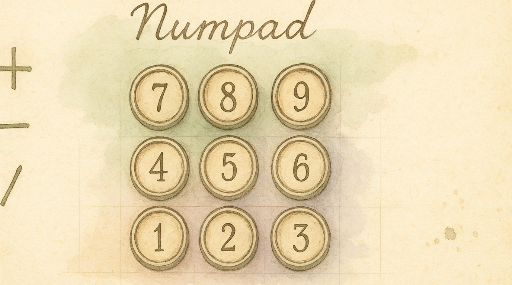

A Numpad Under Your Right Hand
Entering numbers means reaching for the number row — awkward at best, or stretching to a physical numpad that most keyboards don't even have. The Numpad layer turns your right hand into a numpad and your left hand into operators. All from the home row.
What You Get
Enable the Numpad pack and you gain a full numpad layer:
Right hand — numbers: | U | I | O | |---|---|---| | 7 | 8 | 9 |
Left hand — operators: | Key | Output | |-----|--------| | F | + | | D | − | | S | × | | A | ÷ | | G | Enter ⏎ |
Enabling It
- Open KeyPath and click the gear icon to open the inspector panel
- Go to the Rules tab
- Find Numpad in the Layers section
- Toggle it on
Requires Vim Navigation (or another Leader pack) to be enabled — the numpad layer is accessed through the Leader key.
How to Activate
The numpad uses two-step activation:
- Hold your Leader key (Space by default) — enters the navigation layer
- While holding Leader, press ; (semicolon) — enters the numpad layer
- Press number/operator keys — types digits and operators
- Release Leader — back to normal typing
The overlay shows the numpad layout highlighted when you're in the layer.
Use Cases
- Spreadsheets — Enter columns of numbers without leaving the home row
- CSS/code — Type pixel values, hex codes, port numbers
- Calculators — The operator keys (+ − × ÷) are on your left hand, numbers on right
- IP addresses and phone numbers — Rapid numeric entry
- Data entry — Faster than hunting keys on the number row
Tips
- The layout matches a standard numpad: 7-8-9 on top, 1-2-3 on bottom, 0 on the bottom-left
- G = Enter means you can submit calculator entries or spreadsheet cells without reaching
- Practice the two-step activation: Leader → ; becomes muscle memory quickly
- The semicolon activator was chosen because it's on the home row and rarely conflicts with navigation
Troubleshooting
Nothing happens when I press Leader → ;
- Make sure the Numpad pack is enabled in the Rules tab
- Verify Vim Navigation is also enabled (it provides the Leader layer)
- You must hold Leader the entire time — don't release it between pressing ;
I get semicolons instead of activating the layer
You're releasing Leader too early. Hold Leader continuously, then press ; while still holding.
Numbers don't appear in my app
Some apps (rare) intercept numpad keycodes differently from regular number keys. If a specific app misbehaves, check if it has a "numpad input" mode.
Next Steps